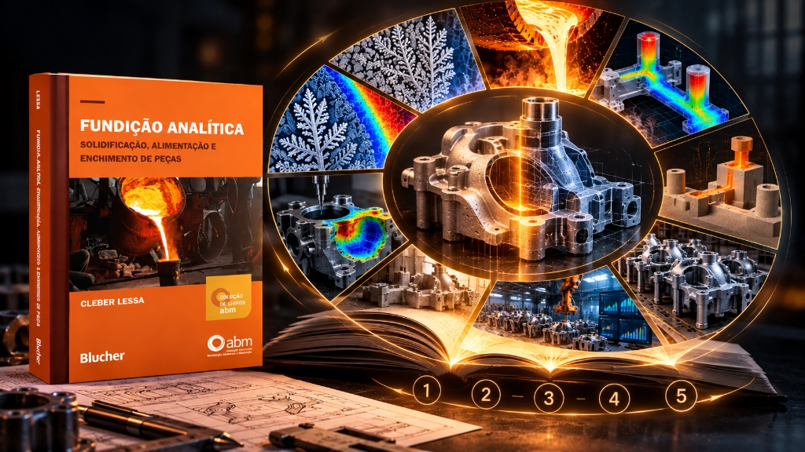

Disponible
Fundición y Metalurgia
Fundición Analítica – Solidificación, Alimentación y Llenado de Piezas
Obtenga un conocimiento físico profundo más allá del empirismo: domine el llenado del molde, el mazarotaje y la solidificación para tomar decisiones técnicas basadas en datos concretos.
12hs
Videoclases en HD
Inmersión VR
Certificado incluido
Hefestus Metal
Especialista en Metalurgia